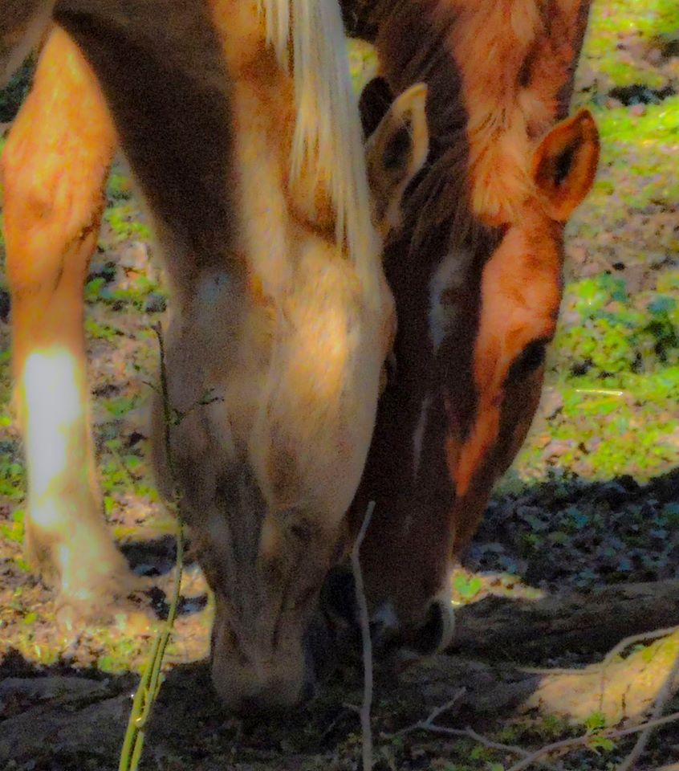

Megan Hommes
Graphic Design Artist
Basic Adob photoshop, Illustrator, Camera raw, and Indesign knowledge. Can work with excel and Google sheet documents. Basic HTML and Css Coding Knoweldge
Featured Projects
View selected projects below. More information can be found at Facebook.com.
Horsing around
Currently I am taking photos for a barn and editing them for website use, and well as print.
View project / case study
Horseback riding instructor and Trainer
SaddleTree Stables
Jully 2017- Curent
Working with horses for 15 years. Riding background includes 4-H, Hunt Seat under saddle and over Fences, as well as Showmanship. Excels at teaching children how to ride, by instilling confidence in a fun, encouraging way. Loves watching kids grow into confident riders and enjoys watching them excel at learning and perfecting new skills.
Wake Tech Adult Highschool
Wake Tech Adult Highschool-Raleigh, NC
2009 Highschol deploma